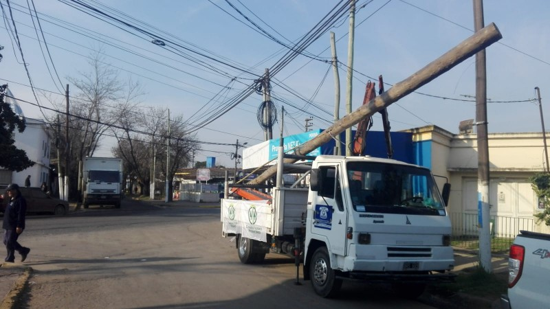

El Consejo de Administración que preside Rodolfo Caffaro Kramer proyecta ampliar sus tendidos de fibra óptica y está próxima a Manzone y otras zonas de influencia. En breve comienza el cambio de cableado en Derqui Centro.
En diálogo con Resumen, el doctor Caffaro Kramer comenzó agradeciendo el paso de Lacava por la entidad. “Me formé al lado de Julio Lacava y reconozco todo el esfuerzo que ha hecho para que la cooperativa haya llegado al día de hoy, sobre todo teniendo en cuenta que le tocó una de las etapas más difíciles, que fue crear y dar funcionamiento a la entidad, poniendo en marcha este sueño de dar servicio telefónico a una zona olvidada por la entonces ENTEL”.
Durante la entrevista, Caffaro Kramer hizo un cuadro de situación actual de la cooperativa. “La telefonía fija hoy está prácticamente en extinción –expresó- hubo cambios tecnológicos muy importantes desde la creación de la cooperativa al día de hoy, donde el gran cambio lo marcan sin dudas las comunicaciones por internet, que es actualmente una herramienta esencial, tanto para la educación, la medicina, y todo tipo de servicios. Por otro lado nosotros no podemos ofrecer telefonía celular, lo que nos ha coartado el crecimiento y lo padecemos desde hace muchos años. Paradójicamente cuando nace la telefonía celular, las cooperativas subvencionaban a las empresas multinacionales que ofrecían el servicio. Hoy te diría que tendría que haberse revertido la ecuación y la telefonía celular tendría que subvencionarnos a nosotros. De todas maneras, no pierdo las esperanzas de que podamos lograrlo. Hay ahora una posibilidad en el horizonte para poder incorporar ese servicio”.
“Pero hoy la necesidad de la gente es sin dudas internet –aseveró-. Hoy estamos dando internet sin línea telefónica a nuestros clientes. Esto es entender qué necesita la gente y brindarle el servicio que necesita”.
Televisión cooperativa
Dentro de los servicios que pueda incorporar la Cooperativa Telefónica Presidente Derqui es el de poder ofrecer televisión en un futuro cercano. “Siempre brindando el servicio por el protocolo de Internet –precisó al respecto Caffaro Kramer-. Estamos pensando para ello preparar nuestro plantel, ya que en muchas partes todavía tenemos cobre, reconvirtiéndolo con fibra óptica que es lo esencial para poder prestar el servicio de televisión. Eso implica una inversión importante pero que hay que hacerla, porque no se puede pensar en expansión con par de cobre, ya que no es apto para dar la calidad y capacidad que necesita internet”.
La larga cuarentena sin dudas ha retrasado lo planificado por los cooperativistas. “El tema de la Pandemia nos ha afectado sobre todo en lo que teníamos planificado para esta primera parte del año –confió a Resumen Caffaro Kramer-. En un primer momento la cooperativa estuvo cerrada, lo que nos complicó bastante en el tema de recaudación. Por suerte esta situación se pudo revertir y ahora estamos mejorando no solo en la recaudación sino también en la gestión”. “Por otra parte mantuvimos durante todo este tiempo el plantel de empleados de la entidad, lo que significó una problemática por la que vamos a entrar en alguno de los planes que ha establecido el gobierno para esta situación, sobre todo en lo concerniente al cumplimiento de las cargas sociales y el IVA, que representan números importantes para la cooperativa. Por suerte tenemos muchos pedidos de servicios y estamos abocándonos mucho a esto”, enumeró.
“Ahora vamos a expandirnos a Manzone con un plan de fibra óptica con un plantel mixto o sea utilizando fibra óptica y en algunos lugares pares de cobre, adaptándonos a las posibilidades económicas de la gente, ya que los equipos de instalación para los abonados que elijan fibra óptica son muy costosos. En ese aspecto, hoy la cooperativa está ofreciendo megas a la medida de lo que nuestros clientes nos solicitan. La idea es poder llegar con planteles de fibra óptica en las mayores áreas posibles ya que como dije, los planteles de cobre tienen limitaciones en cuanto a la capacidad de transmisión”, apuntó.
“En Villa Rosa también tenemos planificado expandirnos para lo que hemos hecho un acuerdo con CICOPROA, como lo hemos hecho también con la Cámara de Comercio de Presidente Derqui para trabajar juntos en el tema, ofreciendo a sus asociados ciertas prerrogativas de calidad en el servicio, tratando también de ofrecer el mejor precio del mercado. Por ejemplo estamos trabajando para comenzar próximamente a cambiar el plantel de fibra óptica en la Avenida de Mayo en Derqui, para luego seguir por Meisner. Hoy al respecto estamos evaluando costos y negociando la forma en que vamos a invertir para hacer realidad lo planificado”, adelantó.
Otro tema importante es cómo llega la cooperativa a las grandes empresas y desarrollos en su zona de influencia. “Lo principal es saber que lo primero que tenemos que ofrecer es la calidad del servicio –explicó Caffaro Kramer-. Nosotros tenemos que estar a la altura de los competidores y adicionar diferenciales, como el trato personal que nos ha caracterizado entre nuestros socios y clientes, tratando de encontrar soluciones a los problemas que se van planteando; esa es la vocación que debemos tener y que inculcamos a los empleados que trabajan con nosotros, a los que continuamente aleccionamos a acompañar al socio, al cliente, brindándoles soluciones y estando a la altura de lo que necesitan. Esa es nuestra forma de competir”.
“El mejor ejemplo de ello es que queremos comenzar a trabajar con el Parque Industrial de Villa Rosa, para ofrecerles nuestros servicios, sin abandonar tampoco las instalaciones residenciales; nuestra intención es ofrecer una paleta de servicios para todos. Ahora estamos analizando un proyecto de la ENACOM, para dar conectividad a barrios populares. Acaba de salir el pliego de condiciones el pasado 4 de septiembre y pensamos presentarnos, ya que en nuestra zona de influencia tenemos muchos barrios populares que bien pueden entrar en el proyecto, caso de la Escondida, Santa Ana y la misma localidad de Manzone, que son zonas aptas para entrar en el nuevo plan gubernamental de conectividad, dirigido a sectores populares”, apuntó. En cuanto al futuro de la entidad, el presidente se mostró muy optimista. “Soy optimista, por dos motivos fundamentales: primero porque tenemos un producto que es necesario para la gente y que está en pleno crecimiento, ya que la necesidad de internet de la gente va creciendo –argumentó- y segundo porque estamos convencidos que estamos en el nivel de servicio y calidad que ofrecen los otros competidores. Hoy estamos brindando soluciones a nuestros socios y clientes y por eso nos están eligiendo”.